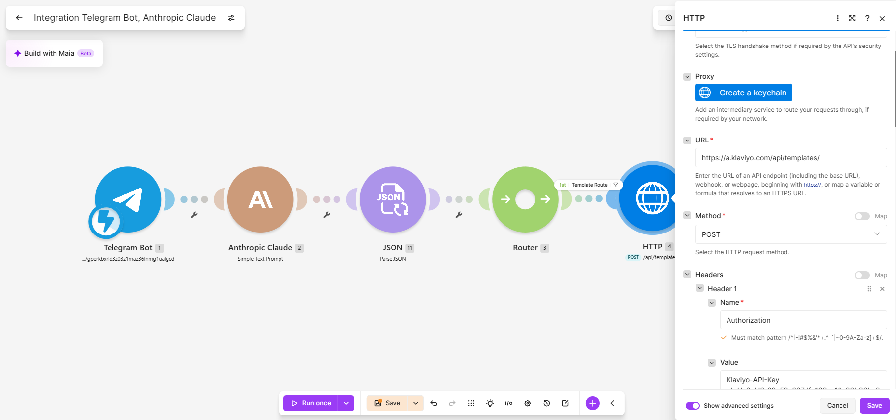
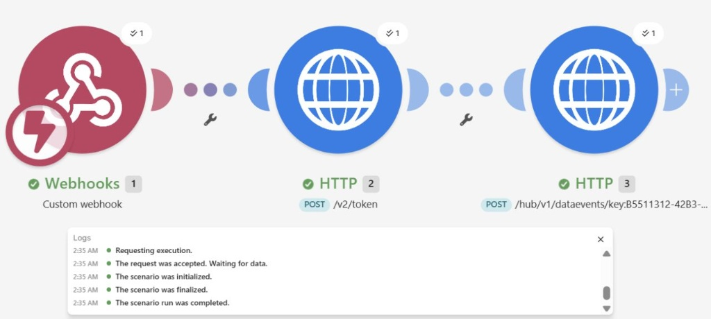
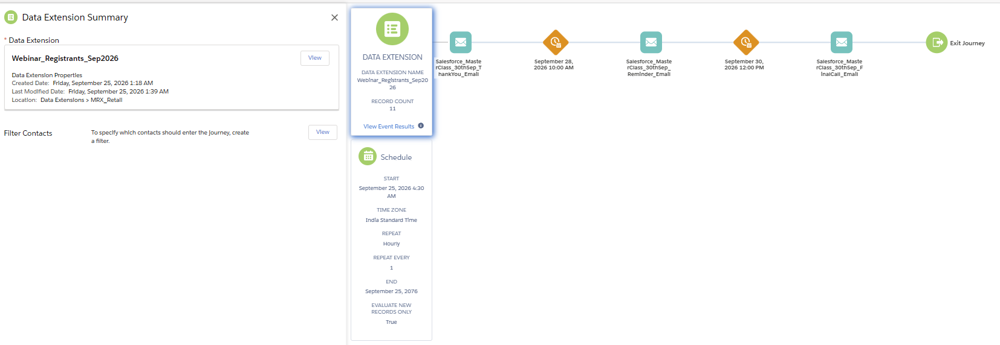
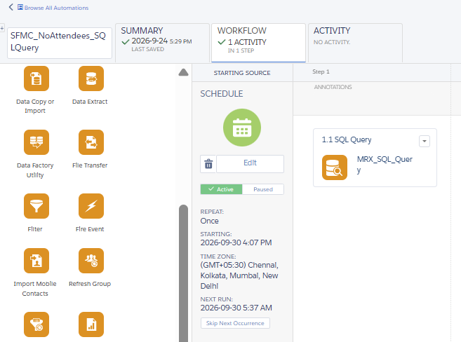

System Architectures & Logic
Zero-Touch Campaign Engine
Integrated Telegram, Make.com, and the Anthropic Claude API to auto-write and inject HTML/Liquid directly into the Klaviyo ESP. This webhook pipeline replaced hours of manual newsletter assembly.

Zero-Latency API Bridge for E-Commerce Transactional Emails
Bypassed hourly FTP imports by engineering a real-time data architecture. Shopify Webhooks push rich JSON payloads to Make.com, which handles dynamic OAuth 2.0 authentication and injects data directly into an SFMC REST API Data Extension.

3-Tier Automated B2B Lead Routing & SLA Engine
Designed a high-volume logistics partner recruitment pipeline. Added a 24-hour delay checkpoint that auto-updates Lead Status to 'Connected' upon rep action, or triggers an automated SLA BREACH task to management.


Zero-Cost Webinar Management Workflow
Replaced paid middleware by building a native SFMC solution. Used AMPscript and CloudPages as a 'Smart Gateway' to log attendance, and scheduled an SQL query in Automation Studio (LEFT JOIN) to isolate no-shows.


Dynamic Personalization via AMPscript
Writing complex AMPscript logic to render highly personalized, subscriber-specific dynamic content blocks based on raw data inputs, eliminating the need for creating multiple static templates.